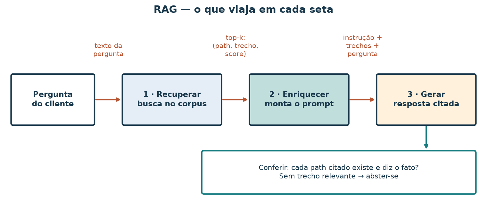
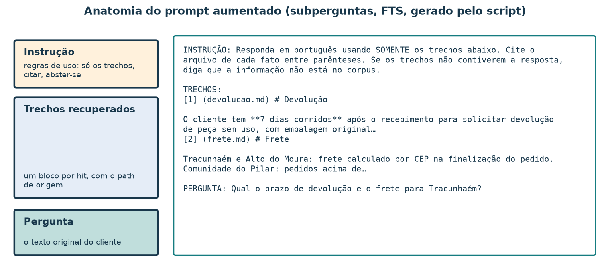
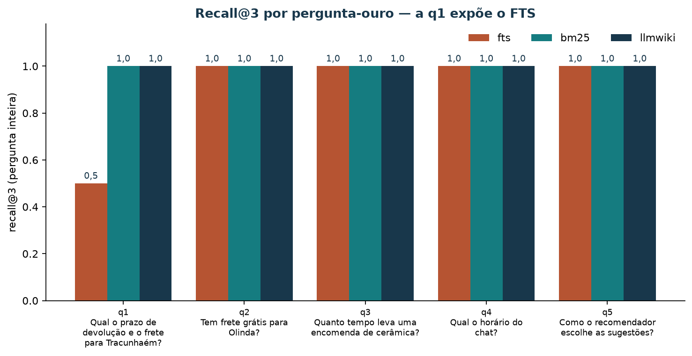
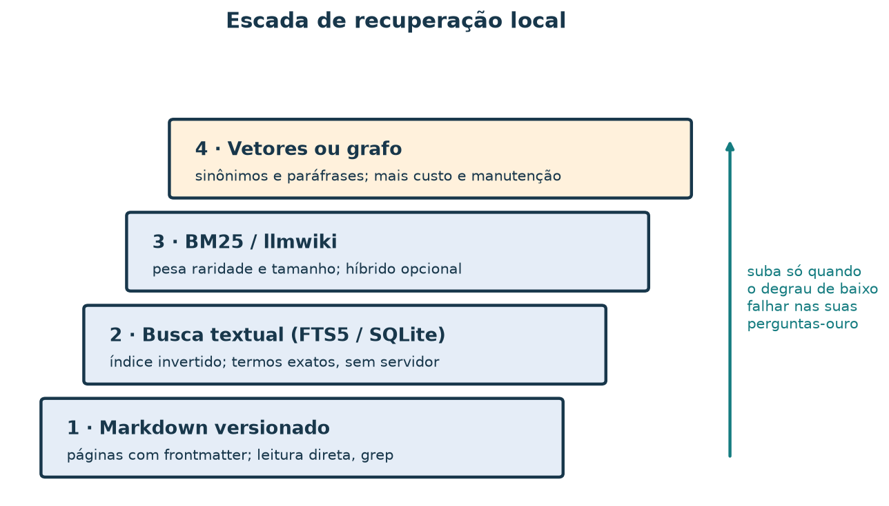

Respostas ancoradas em documentos: recuperar, enriquecer, gerar (RAG)
Leia a versão web com o explorador interativo incorporado.
Um cliente escreve no chat da loja: “Qual o prazo de devolução e o frete para Tracunhaém?”. Um modelo de linguagem responderia com fluência, e talvez inventasse “30 dias” porque é um prazo comum no comércio. A loja quer outra coisa: uma resposta que use apenas o que está escrito nas suas políticas e que diga de qual página veio cada fato. Esse arranjo tem nome: geração aumentada por recuperação, ou RAG (retrieval-augmented generation). Primeiro o sistema busca trechos nos documentos; depois monta um prompt com esses trechos; por fim gera a resposta citando a origem.
Ao concluir este tutorial, você deverá conseguir descrever o que viaja em cada etapa do RAG, montar um prompt aumentado, medir com recall@k se a busca trouxe as páginas certas e diagnosticar uma falha real: na pergunta acima, a busca padrão deste repositório deixa a política de devolução fora do prompt, e o prazo de 7 dias desaparece da resposta. Você vai corrigir essa falha de duas maneiras e medir o efeito.
Os documentos são uma mini-wiki sintética de oito páginas. A etapa de geração é um template que cola os trechos recuperados; nenhum modelo de linguagem roda nesta aula. A disciplina de recuperar, citar e se abster é a mesma quando o template for trocado por um modelo.
Roteiro de estudo
| Tempo sugerido | Atividade de estudo |
|---|---|
| 8 min | Situar RAG entre recuperação de informação e modelos de linguagem |
| 7 min | Ler o corpus e a pergunta do cliente |
| 10 min | Definir trecho, top-k, prompt aumentado, ancoragem e abstenção |
| 10 min | Rodar o loop com FTS5 e encontrar a falha |
| 10 min | Explicar a falha e corrigi-la de duas maneiras |
| 12 min | Avaliar com um conjunto-ouro: recall@k, precisão@k e abstenção |
| 8 min | Escolher o degrau da escada de recuperação |
| 10 min | Explorar no painel e exportar uma evidência |
| 10 min | Resolver o exercício |
1. Onde o RAG se situa
Inteligência artificial (IA) é o campo que estuda sistemas capazes de perceber, raciocinar, aprender e apoiar decisões. Dentro dela, duas tradições se encontram no RAG. A recuperação de informação encontra, numa coleção de documentos, os que atendem a uma consulta: índices invertidos, BM25, busca por vetores. O aprendizado de máquina produz os modelos de linguagem, que geram texto plausível a partir de padrões aprendidos em grandes volumes de dados. Plausível não quer dizer verdadeiro para a sua loja: o modelo não conhece a política de devolução que só existe no seu Markdown.

Figura 1 — Mapa conceitual, não proporcional. O RAG usa a recuperação para decidir o que o gerador pode afirmar, e usa o gerador para redigir a resposta. Neste tutorial a caixa da direita é substituída por um template.
O artigo que deu nome à técnica (Lewis et al., 2020) combinava um recuperador treinado com um gerador. Hoje o termo cobre qualquer arranjo em que a resposta é condicionada a trechos recuperados no momento da pergunta, inclusive com recuperadores clássicos como o deste tutorial.
2. O corpus e a pergunta
Os documentos ficam em mini-wiki-rag/.
Cada página tem um frontmatter com title,
description e tags, seguido do texto.
| Página | Fato que contém |
|---|---|
devolucao.md |
7 dias corridos após o recebimento, peça sem uso e com embalagem original |
frete.md |
Tracunhaém e Alto do Moura: frete calculado por CEP; Pilar: frete grátis acima de R$ 200 para Recife e Olinda; entrega em 3–5 dias úteis no Grande Recife |
prazos.md |
Peças de prateleira em 1–2 dias úteis; encomendas de cerâmica em até 15 dias úteis |
atendimento.md |
Chat das 9h às 18h, dias úteis; o bot “responde frete, prazo e devolução” |
inicio.md |
Página de entrada; cita frete, devolução e prazos sem dar números |
recomendador.md |
A API sugere peças por popularidade e co-ocorrência, com
score e reason |
catalogo-p01.md |
Ficha do Jarro de barro de Tracunhaém (cerâmica) |
catalogo-p04.md |
Ficha da Rendeira do Alto do Moura (renda) |
A pergunta do cliente tem duas partes: o prazo de
devolução, que está em devolucao.md, e o frete para
Tracunhaém, que está em frete.md. Uma resposta correta
precisa das duas páginas. Repare também em atendimento.md e
inicio.md: mencionam os assuntos, mas não trazem os
fatos.
3. Vocabulário do loop

Figura 2 — Os rótulos sobre as setas dizem o que passa de uma etapa à seguinte. A conferência final faz parte do loop: sem ela, uma citação errada passa despercebida.
| Termo | Definição nesta aula | Exemplo |
|---|---|---|
| Trecho (chunk) | Unidade de texto que a busca devolve e o prompt recebe | Aqui, uma página inteira com uma linha de destaque |
| Ranking | Lista de trechos ordenada por relevância estimada | frete.md, catalogo-p01.md, … |
| Top-k | Os primeiros do ranking; só eles entram no prompt | Com , a quarta página fica de fora |
| Prompt aumentado | Instrução + trechos com origem + pergunta | Figura 3 |
| Ancoragem (grounding) | Cada afirmação da resposta é sustentada por um trecho do prompt | “7 dias (devolucao.md)” |
| Citação | O path do trecho que sustenta a afirmação | (frete.md) |
| Abstenção | Responder que o corpus não contém a informação | Pergunta sobre Pix |
A consequência prática do top-k é dura: o que não entra no prompt não pode ser citado. Se a página certa ficou na posição 5 e , nem o melhor modelo do mundo encontrará o fato no prompt; ou ele se abstém, ou inventa.
4. Rodar o loop e encontrar a falha
Na raiz do repositório, sem instalar nada além do ambiente do projeto:
uv run python scripts/demo_rag_fts.py --indexar
uv run python scripts/demo_rag_ancorar.pyO primeiro comando cria material/rag/fts.sqlite, um
índice FTS5 do SQLite (fora do Git). O segundo recupera
os três melhores trechos para a pergunta do cliente, monta a resposta
por template e grava rag/resultado_rag_ancorado.json.
Resultado esperado:
Com base em frete.md, catalogo-p01.md, atendimento.md:
- (frete.md) … Tracunhaém e Alto do Moura: frete calculado por CEP …
- (catalogo-p01.md) … Jarro barro Tracunhaém … Região: Tracunhaém …
- (atendimento.md) … O bot responde frete, prazo e devolução …As três citações existem e estão no corpus. A resposta parece bem
ancorada, mas não contém o prazo de devolução.
devolucao.md ficou fora do top-3. Com
ela aparece, em quinto:
uv run python scripts/demo_rag_fts.py "Qual o prazo de devolução e o frete para Tracunhaém?"Ordem: frete.md, catalogo-p01.md,
atendimento.md, inicio.md,
devolucao.md. Duas páginas que só
mencionam o assunto ocupam vagas que a página com o
fato precisava.
Por que a busca errou
O FTS5 ordena por uma variante de BM25: soma contribuições dos termos
da consulta presentes em cada documento, ponderadas por raridade e
tamanho. O script de indexação (demo_rag_fts.py)
grava o corpo de cada página, sem o frontmatter. No
corpo de devolucao.md a palavra “prazo” não aparece; ela só
existe na description (“Prazo, estado da peça…”). Assim,
para essa consulta, devolucao.md casa apenas “devolução”,
enquanto atendimento.md casa “frete”, “prazo” e “devolução”
numa página curta. O BM25 recompensa cobrir vários termos, e cobrir não
é responder.
5. Duas correções, medidas
Correção 1 — dividir a pergunta
Uma pergunta com duas partes vira duas consultas. Cada subpergunta contribui com seu melhor trecho novo:
uv run python scripts/demo_rag_ancorar.py \
--subpergunta "prazo de devolução" \
--subpergunta "frete para Tracunhaém" \
--saida material/rag/resultado_rag_subperguntas.jsonResultado esperado: Com base em devolucao.md, frete.md:
e o trecho “O cliente tem 7 dias corridos após o
recebimento…”. Mesmo recuperador, mesmo índice; só a consulta mudou.
Correção 2 — indexar também o frontmatter
O BM25 da biblioteca padrão em scripts/avaliar_rag.py
pesquisa title, description e corpo, com
e
:
uv run python scripts/demo_rag_ancorar.py --recuperador bm25 \
--saida material/rag/resultado_rag_bm25.jsonResultado esperado:
Com base em frete.md, atendimento.md, devolucao.md:. Os
scores são frete.md 2,97, atendimento.md 2,97
e devolucao.md 2,44; a política entra no prompt porque
agora “prazo” casa na description.
As duas correções funcionam aqui por motivos diferentes, e a segunda
é mais frágil: na consulta curta
devolução frete Tracunhaém, sem “prazo”, o mesmo BM25 deixa
devolucao.md em quinto. Dividir a pergunta ataca a causa
(duas necessidades numa consulta); indexar o frontmatter ataca um
sintoma (uma palavra que faltava no corpo).

Figura 3 — O prompt aumentado da correção 1, tal como o script o
grava no campo prompt_aumentado do JSON. A instrução manda
usar só os trechos e se abster quando faltar informação; os números
entre colchetes permitem citar.
6. Avaliar a recuperação com um conjunto-ouro
Uma pergunta só não basta para escolher um recuperador. O rag/perguntas-ouro.json
traz seis perguntas com as páginas que contêm cada resposta. A q6
pergunta algo que o corpus não responde.
| Id | Pergunta | Páginas relevantes |
|---|---|---|
| q1 | Qual o prazo de devolução e o frete para Tracunhaém? | devolucao.md, frete.md |
| q2 | Tem frete grátis para Olinda? | frete.md |
| q3 | Quanto tempo leva uma encomenda de cerâmica? | prazos.md |
| q4 | Qual o horário do chat? | atendimento.md |
| q5 | Como o recomendador escolhe as sugestões? | recomendador.md |
| q6 | Vocês aceitam pagamento por Pix? | nenhuma: abster-se |
Seja o conjunto de páginas relevantes de uma pergunta e o top-k devolvido.
Recall@k: das páginas necessárias, quantas chegaram?
Precisão@k: das vagas do prompt, quantas foram bem usadas?
Minúcia. Na q1 com FTS5 e : , . A interseção tem uma página: recall e precisão . Numa pergunta com uma só página relevante, a precisão@3 nunca passa de : duas vagas sempre vão para trechos que não ajudam. Por isso o recall é a métrica principal da recuperação no RAG, e a precisão mede o ruído que o gerador terá de ignorar.
Rode a avaliação completa:
uv run python scripts/avaliar_rag.pyO script avalia FTS5, BM25 e, se o binário llmwiki
estiver no PATH, a busca --keyword da llmwiki (conferido
com a versão 0.2.1). Grava rag/avaliacao_rag.json.
Resultado esperado:
| Recuperador / estratégia | Recall@1 médio | Recall@3 médio | Abstenção na q6 |
|---|---|---|---|
| FTS5, pergunta inteira | 0,90 | 0,90 | sim |
| FTS5, subperguntas | 0,90 | 1,00 | sim |
| BM25, pergunta inteira | 0,90 | 1,00 | sim |
| BM25, subperguntas | 0,90 | 1,00 | sim |
| llmwiki, pergunta inteira | 0,90 | 1,00 | não |
| llmwiki, subperguntas | 0,90 | 1,00 | não |
O recall@1 médio é 0,90 para todos porque a q1 tem duas páginas relevantes: uma vaga só comporta metade da resposta, e .

Figura 4 — Uma única pergunta separa os recuperadores neste corpus. Em cinco perguntas, uma diferença assim pode ser acaso; num projeto real, o conjunto-ouro precisa de dezenas de perguntas escritas antes de comparar ferramentas.
Abstenção: quando a melhor resposta é “não sei”
Para a q6, FTS5 e BM25 não acham nenhum termo da pergunta no corpus e
devolvem lista vazia; o template responde “Não encontrei trechos no
corpus…”. A llmwiki devolve frete.md (2,09),
prazos.md (1,40) e mais duas páginas, porque também pontua
palavras curtas como “por”. Um gerador que recebesse esses trechos
poderia montar uma resposta sobre frete para uma pergunta sobre Pix. Um
recuperador que sempre devolve algo precisa de uma regra explícita de
abstenção: um score mínimo, ou a exigência de que os termos principais
da pergunta apareçam no trecho.
Modos de falha e a checagem de cada um
| Modo de falha | Como aparece | Checagem antes de confiar |
|---|---|---|
| Página certa fora do top-k | Resposta fluente e incompleta (q1 com FTS5) | Recall@k num conjunto-ouro; dividir perguntas compostas |
| Página que menciona sem responder | atendimento.md ocupa a vaga |
Precisão@k; ler o trecho, não só o título |
| Pergunta sem resposta no corpus | Trechos irrelevantes viram resposta (q6 com llmwiki) | Pergunta-ouro sem relevantes; limiar de abstenção |
| Citação inexistente | Path plausível que não está na wiki | test -f material/mini-wiki-rag/<path>; o JSON
traz citacoes_existem |
| Citação que não sustenta o fato | Path real, fato de outra página | Conferir se o trecho citado contém o número afirmado |
| Índice desatualizado | Política mudou, resposta antiga | Reindexar depois de cada edição (--indexar) |
7. A escada de recuperação local

Figura 5 — Cada degrau resolve um tipo de falha e traz um custo novo. O critério para subir é a medida no conjunto-ouro, não a novidade da ferramenta.
| Degrau | Quando basta | Sinal para subir |
|---|---|---|
| 1 · Markdown e grep | Poucas páginas, perguntas com palavras exatas | Equipe passa a ler arquivos demais por pergunta |
| 2 · FTS5 | Centenas de páginas, termos do cliente iguais aos do texto | Recall@k baixo em perguntas compostas ou com campos fora do índice |
| 3 · BM25 com campos (llmwiki) | Precisa pesar título e descrição; quer híbrido opcional | Falhas por sinônimo: “troca” × “devolução”, “entrega” × “frete” |
| 4 · Vetores ou grafo | Muitas paráfrases; relações entre entidades | Custo de embeddings, reindexação e explicação do ranking passa a valer |
Na mini-wiki, a falha da q1 foi resolvida sem subir de degrau: dividir a pergunta bastou para o FTS5. Esse é o resultado que a escada pede que você procure primeiro.
8. Explorar o loop no painel
O explorador de busca e RAG reúne as etapas numa página: escolha a pergunta, o recuperador, a estratégia e ; veja o ranking com a contribuição de cada termo, o prompt aumentado verbatim, a resposta por template com as checagens de citação e o recall@k das seis perguntas-ouro. Você pode usá-lo incorporado à versão web deste tutorial ou abrir o HTML numa cópia local do repositório. Consulte o roteiro de exploração.
Experimente o RAG neste tutorial
Escolha pergunta, recuperador e k; confira o prompt aumentado e as citações. O corpus é a mini-wiki sintética da loja.
O painel recalcula o BM25 no navegador; FTS5 e llmwiki aparecem como rankings já calculados pelos scripts, e por isso só existem para as perguntas prontas. Nenhum modelo de linguagem é chamado.
Atividade no painel
- Clique em Restaurar (q1, FTS5, ). Copie a checagem que acusa a página ausente.
- Mude para 5. O recall sobe? Quantas vagas do prompt agora vão para páginas que não respondem?
- Volte a e escolha Subperguntas intercaladas. Compare o prompt do painel 03 com a Figura 3.
- Escolha q6 e alterne entre os três recuperadores. Registre qual se abstém.
- Exporte o CSV do painel 05 e o PNG do ranking; escreva uma recomendação de até cinco frases: recuperador, estratégia, , uma limitação e uma checagem obrigatória.
9. Limitações
- Oito páginas e seis perguntas mostram o procedimento; não sustentam a escolha de um recuperador para um acervo real.
- O “gerador” é um template. Com um modelo de linguagem surgem falhas novas: ignorar a instrução, misturar conhecimento prévio com o trecho, citar o path certo para o fato errado. A checagem de citações continua necessária.
- Os trechos aqui são páginas inteiras. Em documentos longos, a forma de cortar o texto em trechos muda o recall tanto quanto o recuperador.
- O conjunto-ouro foi escrito por quem conhece o corpus; perguntas de clientes reais usam outras palavras e testam sinônimos que estas não testam.
10. Exercício
Use a pergunta “Tem frete grátis para Olinda e qual o prazo de entrega no Grande Recife?”.
- Liste as páginas que contêm cada parte da resposta.
- Rode
demo_rag_ancorar.pycom FTS5 e (use--perguntae uma--saidasua). Registre as citações e diga se a resposta está completa. - Calcule recall@3 e precisão@3 da sua execução.
- Rode de novo com duas
--subperguntae compare. - Escreva o prompt aumentado que um modelo receberia na melhor das duas execuções.
- Proponha uma sétima pergunta-ouro para o arquivo, com sua lista de relevantes, que teste abstenção ou sinônimo.
Resolução comentada
Páginas: as duas partes estão em
frete.md (“pedidos acima de R$ 200 têm frete grátis para
Recife e Olinda” e “Grande Recife 3–5” dias úteis). Aqui
;
a pergunta é composta, mas uma página responde às duas partes.
FTS5, pergunta inteira:
uv run python scripts/demo_rag_ancorar.py \
--pergunta "Tem frete grátis para Olinda e qual o prazo de entrega no Grande Recife?" \
--saida material/rag/exercicio-inteira.jsonfrete.md aparece entre os três primeiros, então recall@3
e precisão@3
.
As outras duas vagas ficam com devolucao.md e
atendimento.md, que casam palavras da pergunta sem conter o
que foi perguntado.
Subperguntas: com
--subpergunta "frete grátis Olinda" e
--subpergunta "prazo de entrega Grande Recife", o script
toma o melhor trecho novo de cada subpergunta. Se as
duas apontam para frete.md, a segunda subpergunta traz a
próxima página do seu ranking, que não ajuda. Dividir a pergunta resolve
necessidades em páginas diferentes; quando uma página responde a tudo,
dividir só acrescenta ruído.
Prompt: a instrução do script, um bloco
[1] (frete.md) … com o trecho e a pergunta original. Uma
resposta ancorada diria: “Pedidos da Comunidade do Pilar acima de R$ 200
têm frete grátis para Olinda; a entrega no Grande Recife leva de 3 a 5
dias úteis (frete.md).” Repare que a condição “acima de R$ 200,
Comunidade do Pilar” precisa ir junto: cortar o trecho no meio
produziria uma resposta citada e enganosa.
Sétima pergunta: por exemplo, “Posso trocar uma peça
que chegou quebrada?”, com relevantes devolucao.md e
atendimento.md. Ela testa sinônimo (“trocar” e “quebrada”
versus “devolução” e “avaria”) e mostra o limite da busca por
palavra-chave.
Referências bibliográficas e roteiro de leitura
Consulta dos materiais on-line: 7 nov. 2026.
- LEWIS, Patrick et al. Retrieval-augmented generation for knowledge-intensive NLP tasks. In: Advances in Neural Information Processing Systems 33 (NeurIPS 2020), 2020. arXiv:2005.11401. Para aprofundar: a proposta original de condicionar a geração a trechos recuperados no momento da pergunta.
- MANNING, Christopher D.; RAGHAVAN, Prabhakar; SCHÜTZE, Hinrich. Introduction to Information Retrieval. Cambridge: Cambridge University Press, 2008. Texto integral on-line. Para aprofundar: o capítulo 8 trata de avaliação, conjuntos de relevância, precisão e recall.
- ROBERTSON, Stephen; ZARAGOZA, Hugo. The probabilistic relevance framework: BM25 and beyond. Foundations and Trends in Information Retrieval, v. 3, n. 4, p. 333–389, 2009. DOI: 10.1561/1500000019. Para aprofundar: por que o BM25 recompensa cobrir termos e como pesos por campo mudam o ranking.
- GAO, Yunfan et al. Retrieval-augmented generation for large language models: a survey. 2023. arXiv:2312.10997. Para aprofundar: variações do loop, divisão de consultas e avaliação de ancoragem.
- SQLITE. SQLite FTS5 Extension. Documentação em inglês.
Para consultar: colunas indexadas, tokenizadores e a
ordenação por
rank.
| Artefato | Papel |
|---|---|
material/mini-wiki-rag/ |
Corpus de oito páginas |
scripts/demo_rag_fts.py |
Índice e busca FTS5 |
scripts/demo_rag_ancorar.py |
Loop com template; --recuperador, --k,
--subpergunta, --saida |
scripts/avaliar_rag.py |
BM25 da biblioteca padrão e avaliação no conjunto-ouro |
material/rag/perguntas-ouro.json |
Seis perguntas com páginas relevantes |
material/rag/avaliacao_rag.json |
Rankings e recall@k dos recuperadores |
material/rag/resultado_rag_*.json |
Respostas ancoradas das seções 4 e 5 |
material/bi-rag/ |
Explorador de busca e RAG |
scripts/gerar_figuras_rag.py |
Figuras deste tutorial |